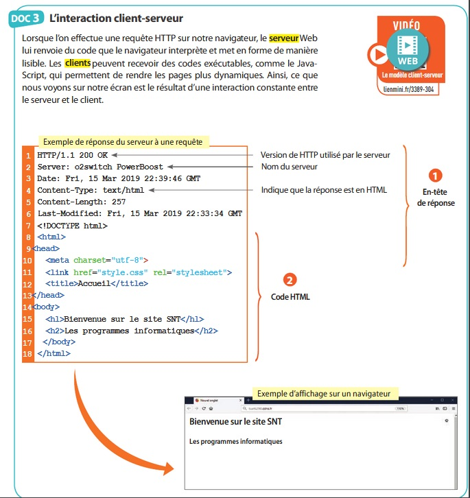

Vidéo à visualiser : client-serveur

Travail demandé :
Complétez le document réponse paragraphe l'interaction client-serveur suivant : document réponse
L'interaction client-serveur
Questions :
Quelle partie de la réponse du serveur s’affiche sur l’écran du navigateur ?
CONCLUSION
Comment peut-on décrire simplement le fonctionnement du Web en complétant la phrase suivante :
Le Web s’appuie sur des documents écrits en langage qui sont hébergés par des . Les clients accèdent aux pages Web dans le monde entier via leurs au moyen de requêtes .
Créé avec HelpNDoc Personal Edition: Créer des livres électroniques facilement